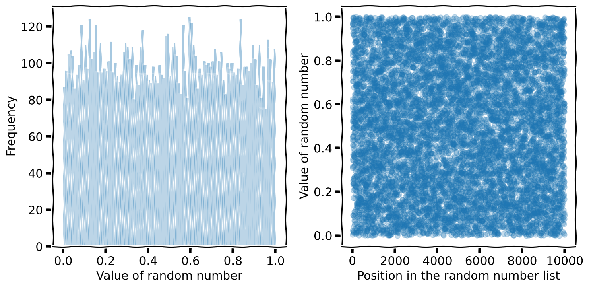
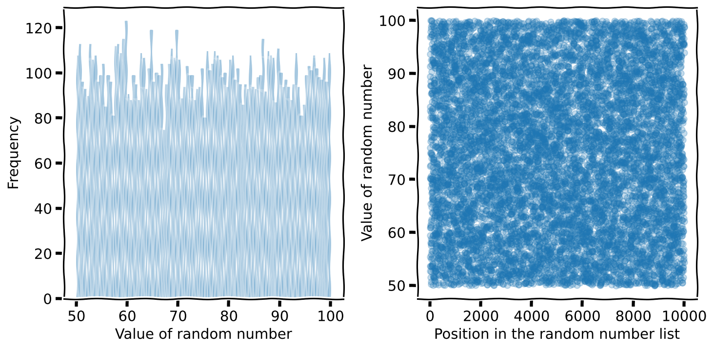
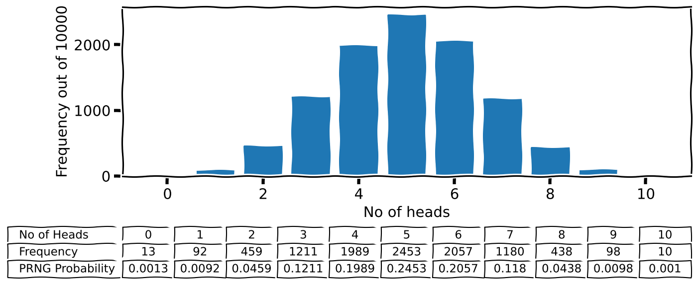
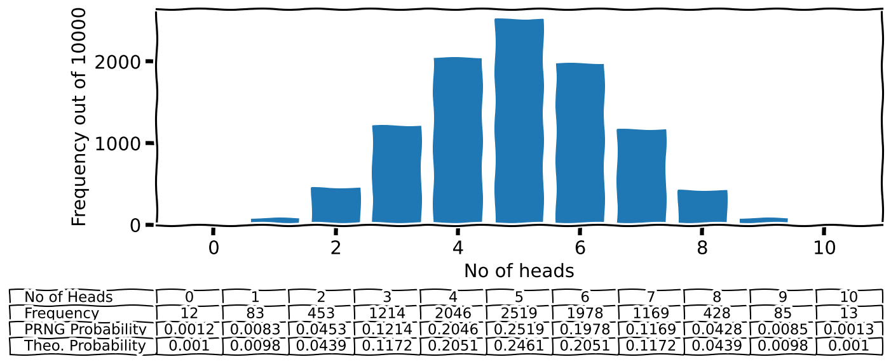

# | include: false
import numpy as np
import pandas as pd
np.random.seed(256852)Random Numbers (Need)

1 What to expect in this chapter
Random numbers are extremely important in many fields ranging from cryptography to finance. For example, random numbers are routinely used to encrypt information on the internet. They are also heavily used in research for various simulations and calculations. In this part, I will take you on a random journey from generating random numbers to using them to do some really cool (and fun) stuff.
2 Real and Pseudo Random Numbers
A device that provides random numbers is called a random number generator (RNG). Real random number generators use random physical processes (e.g. radioactivity or noise in circuits) to generate random numbers. However, some algorithms can produce a stream of numbers that approximate real random numbers. Because a deterministic algorithm generates these numbers, some argue that these RNG are not ‘truly’ random. So we call them pseudo RNG (PRNG).
Every time we use a PRNG, it gives us a new number. However, one of the drawbacks of PRNG is that the numbers begin to repeat once you have drawn enough numbers. Luckily, modern PRNG algorithms are so sophisticated that it takes (for a PRNG called the Mersenne Twister) about \(10^{19937}-1\) times before the numbers repeat. This is good enough for us and most simulations.
Typical PRNG produces uniformly distributed numbers between 0 and 1. Let’s try to see what this means using NumPy.
3 NumPy’s PRNG
Let me show you how to use NumPy to generate some random numbers.
np.random.rand() # Give one number0.7154925195891241np.random.rand(10) # Give ten numbers`array([0.88498484, 0.46907579, 0.95187019, 0.95209548, 0.61604872,
0.22207404, 0.25692857, 0.60728282, 0.78282825, 0.24779986])np.random.rand(5,2) # Give five sets of 2array([[0.06612618, 0.91360699],
[0.19228622, 0.07795893],
[0.8518959 , 0.05329474],
[0.42617793, 0.69976141],
[0.25743009, 0.32820093]])I like you to notice two things.
- All the numbers are between 0 and 1.
- The numbers are (more or less) evenly (i.e. uniformly) distributed to cover the interval between 0 and 1.
Okay, the second point is difficult to see. One way to convince ourselves is to generate a large set of numbers and check if the percentages of numbers match. We can do it as I have done below (do remember that sum() considers True as 1 and False as 0).
n = 10000
random_numbers = np.random.rand(n)# The numbers less than .5 must be about 50%
np.sum(random_numbers < .5) / n * 10049.59# The numbers less than .25 must be about 25%
np.sum(random_numbers < .25) / n * 10024.740000000000002# The numbers more than .75 must be about 25%
np.sum(random_numbers > .75) / n * 10024.73.1 A simple graphical test
Alternatively, we can convince ourselves of the uniformity of the PRNG by plotting the numbers as a scatter plot or a histogram.

Here is the code.
n = 10000
random_numbers = np.random.rand(n)
fig, ax = plt.subplots(nrows=1, ncols=2)
axis = ax[0]
axis.hist(random_numbers, bins=100, alpha=.25)
axis.set_xlabel("Value of random number")
axis.set_ylabel("Frequency")
axis = ax[1]
axis.scatter(range(n), random_numbers, alpha=.25)
axis.set_xlabel("Position in the random number list")
axis.set_ylabel("Value of random number")Please stop for a moment and make sure you understand what the plots are and what each is telling you. You should talk to someone if you are not sure.
3.2 Uniformly beyond \([0,1)\)
Often we need random numbers distributed over a range other than 0 and 1. We can use np.random.uniform() for this. Let’s generate a large set of random numbers in the interval \([50,100]\) using np.random.uniform() and create a histogram and scatter plot as we did earlier.
I don’t need to show the code for plotting again. So, here is the most essential part.
n = 10000
random_numbers = np.random.uniform(low=50, high=100, size=n)
Notice that the numbers are now between 50 and 100!
3.3 ‘seeding’ a PRNG
Sometimes, we need PRNG to generate the same set of numbers. For example, when we are debugging some code. You can achieve this by specifying a seed, the integer number that ‘kicks off’ the PRNG algorithm. You do not usually have to seed the PRNG. Instead, it does it automatically by using ‘some’ number (e.g. the number of milliseconds since January 1970) internally.
You will better understand what the seed does with the following code.
np.random.randint(0, 100, 10) # Ten integers between 0 and 100array([49, 56, 3, 35, 76, 21, 94, 43, 21, 60])np.random.randint(0, 100, 10) # Another ten integers between 0 and 100array([84, 91, 42, 50, 40, 98, 43, 59, 93, 72])np.random.seed(1234) # Specifying a seed
np.random.randint(0, 100, 10) # Ten integers between 0 and 100array([47, 83, 38, 53, 76, 24, 15, 49, 23, 26])np.random.seed(1234)
np.random.randint(0, 100, 10) # Same ten integers between 0 and 100array([47, 83, 38, 53, 76, 24, 15, 49, 23, 26])That’s enough basic stuff. Let’s start using random numbers!
4 Using Random Numbers
4.1 Simulating a Magic-8 Ball
Let me show you some examples of using random numbers. I like to start with a simple, frivolous one of simulating a Magic-8 ball.
I will put my simulation in a function called shake_magic_8() as shown below. I borrowed the information on the 20 options of the original Magic-8 ball from the relevant Wikipedia page.
def shake_magic_8():
'''
Function to simulate a Magic-8 ball!
'''
options = ['It is certain.', 'It is decidedly so.',
'Without a doubt.', 'Yes definitely.',
'You may rely on it.', 'As I see it, yes.',
'Most likely.', 'Outlook good.',
'Yes.', 'Signs point to yes.',
'Reply hazy, try again.', 'Ask again later.',
'Better not tell you now.', 'Cannot predict now.',
'Concentrate and ask again.', 'Don\'t count on it.',
'My reply is no.', 'My sources say no.',
'Outlook not so good.', 'Very doubtful.']
return np.random.choice(options)Let’s see if it works.
questions = ['Will I be pretty?',
'Will I be rich?',
'Will I be in trouble?']
for question in questions:
print(f'Q: {question}')
print(f'A: {shake_magic_8()}\n')Q: Will I be pretty?
A: Outlook not so good.
Q: Will I be rich?
A: Don't count on it.
Q: Will I be in trouble?
A: Yes.Although the outlook does not look too good for me, I hope you understand what is going on. np.random.choice() picks one of the options randomly. So, getting each is equally likely.
4.2 Flipping Coins
Now let us look at flipping coins.
A fair coin
I can simulate a flip of a fair coin by:
np.random.choice(['Head', 'Tails'])'Head'If I want 10 flips:
no_of_coins = 10
np.random.choice(['Head', 'Tails'], no_of_coins)array(['Head', 'Head', 'Head', 'Head', 'Tails', 'Tails', 'Head', 'Head',
'Head', 'Tails'], dtype='<U5')Alternatively, if you and I agree to consider any number in (0, .5] to be Tails and any number in (.5, 1) to be Heads, then the following works too.
def flip_coins(no_of_coins=1, probability=.5):
'''
Returns the number of values greater that
`probability` (considered as 'Heads').
'''
results = np.random.rand(no_of_coins)
no_of_heads = np.sum(results > probability)
return no_of_headsno_of_coins = 1_000
no_of_heads = flip_coins(no_of_coins)
print(f'Number of heads: {no_of_heads/no_of_coins*100:.2f}%')Number of heads: 50.80%Since I plan to flip coins a bit more, I have created a function that gives me the number of heads. I have also used probability=.5 because we are dealing with a fair coin.
A biased coin
The advantage of the second way of simulating coins is that we can easily simulate a biased coin simply by messing with probability. For example, let’s say I want a probability of .7 for a Head. Since we need to increase the chance of a number being considered a Head, we have to make probability=.3. Please make sure this makes sense to you or have a chat with someone to convince yourself.
no_of_coins = 1_000
no_of_heads = flip_coins(no_of_coins, probability = .3)
print(f'Number of heads: {no_of_heads/no_of_coins*100:.2f}%')Number of heads: 72.10%A flipping experiment
Access to a good PRNG will allow you to run quick experiments. These will help you gain insights into more theoretical models of the same experiments. So, you can start using computers to better understand science and sometimes even see how the cogs tick in the machine.
Let me demonstrate this with a simple experiment. Say we flip 10 fair coins in one go. What is the probability that 7 of them will come out Heads? There is an elegant theoretical answer to this question; I will come to that later. But first, let’s see if we can get a solution using our PRNG.
We can get an answer if we flip 10 coins several thousand times and count the number of heads. I.e. use flip_coins(10) many times and keep score.
no_of_repeats = 10_000
result = [flip_coins(no_of_coins=10) for _ in range(no_of_repeats)]
no_of_heads, heads_counts = np.unique(result, return_counts=True)np.unique() with return_counts=True returns the unique values (of Heads) in the list and how many times they occur. We can get the probabilities by dividing the array with the counts by the number of repeats.
heads_probability = heads_counts/no_of_repeatsLet’s plot this data.
plt.rcParam['figure.figsize'] = (10,5)
plt.bar(no_of_heads, heads_counts);
plt.xlabel('No of heads')
plt.ylabel(f'Frequency out of {no_of_repeats}')
plt.table([no_of_heads, heads_counts, heads_probability],
rowLabels=['No of Heads', 'Frequency', 'PRNG Probability'],
loc='bottom',
bbox=[0, -0.5, 1, 0.3])
As you can see, I have also included the various numbers in a Matplotlib table below (I adjusted the bbox values by trial and error.)
The theoretical explanation of how many times each head should appear is described by the binomial distribution. Understanding the basics of distributions (i.e. what they are and how to use them) is a critical bit of knowledge for anyone in a university.
SciPy has various functions to calculate many of these important distributions. Let me show you how to do that now. First, let’s import the machinery for the binomial distribution.
from scipy.stats import binomThe binomial distribution is discrete (i.e. because you have Heads or Tails, no half or quarter Heads). For such distributions, you get the various probabilities using the distribution’s pmf() (probability mass function or discrete density function). Don’t get distracted by the funky names; the pmf() just gives the probabilities for the various possibilities of the discrete distributions.
The probability we want is:
binom.pmf(k=7, n=10, p=.5)0.11718749999999999I will repeat: the binomial distribution gives us the probability of getting 7 heads when you throw 10 fair (p=.5) coins.
For the same completion, I will also calculate the rest of the values. This is absurdly easy:
binomial_probabilities = binom.pmf(k=no_of_heads, n=10, p=.5)Let me include these values in the plot to complete the story1

Footnotes
If you like to know how, please look for Matplotlib
table().↩︎